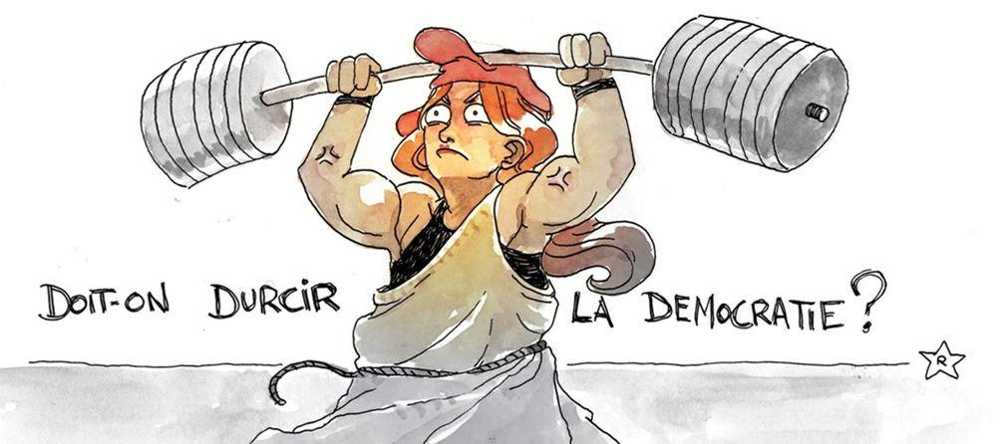
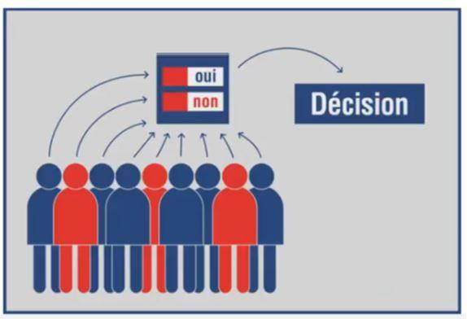

Des législatives partielles permettront l’élection de quatre députés dimanche 6 Juin. Le premier tour n’a intéressé qu’un électeur sur quatre. Les nouveaux venus qui débarqueront à l’Assemblée bénéficieront d’une légitimité toute formelle. Élus pour un an, sans pouvoir modifier la majorité en place, ils subissent aussi les conséquences d’une accumulation de faits qui ont remis en cause le fonctionnement de notre démocratie. L’incapacité de l’alternance entre la gauche et ce qu’on appelle la droite est désormais ancrée dans les esprits : depuis 1981, elle n’a jamais arrêté le long déclin de notre pays ni même apporté une solution aux problèmes les plus cruciaux. Rendu stérile sur le plan social, la gauche s’est repliée sur les problèmes sociétaux, ajoutant la décadence au déclin. La « droite » a, selon une tradition nationale, été une fois encore la gauche avec vingt ans de retard, célébrant aujourd’hui ce qu’elle combattait hier, en un piteux ralliement. Le spectacle d’élus accrochés à leurs sièges plutôt que passionnés pour l’amour de la France a ôté tout respect pour les « politiciens ». Les « affaires » n’ont rien arrangé, et après celle montée en épingle pour évincer François Fillon, les Français ont pour beaucoup espéré qu’un homme jeune et apparemment brillant allait briser le système. C’était une aveugle illusion puisqu’il en est un pur produit. Parvenu au pouvoir par le socialisme dans sa version strauss-kahnienne, il est l’homme de la technocratie et de la finance mondialiste, de l’alliance entre la haute fonction publique et les milliardaires, l’élu de Davos, celui qui va en finir avec ces vieilleries que sont le peuple souverain, la nation, la France, pour asseoir plus complètement la gouvernance des sachants, tout en recyclant ses amis socialistes.
Les Français ont fui Charybde et ils sont tombés dans Scylla. Depuis quatre ans, ils sont soumis à une avalanche de catastrophes, mais bercés par la douce musique des médias complices financés par les amis du président. De la révolte des gilets jaunes, ces Français périphériques ulcérés par une fiscalité oppressive et injuste, jusqu’à l’alerte lancée par les militaires sur la menace de guerre civile qui pèse désormais sur notre société, notre pays n’a connu qu’une évolution suicidaire masquée en partie par les longs discours élyséens profitant éhontément de la crise sanitaire qui n’avait, cependant, pas été anticipée, même à court terme. D’un état d’urgence à un autre, on a habitué le peuple à subir la restriction de ses libertés, et la propagation des peurs virales l’a même rendu en partie complice. Le régime macronien, c’est le syndrome de Stockholm : les otages sont séduits par celui qui les enferme.
Les Français ne croient plus guère aux élections. La fin du confinement va-t-elle leur faire retrouver le chemin des urnes ? Les municipales elles-mêmes ont été noyées dans le brouillard du covid, avec des réélections massives au premier tour et la victoire surréaliste des khmers verts dans les grandes villes au second. Au-delà des régionales, c’est la présidentielle qui reste la butte témoin de notre démocratie ruinée. Depuis l’instauration du quinquennat, le pouvoir législatif n’est plus que l’ombre de l’Lysée. Les électeurs avec cohérence offrent une majorité au président qu’ils viennent d’élire. Lorsque celle-ci n’est constituée que de godillots désignés par le candidat élu, et dépourvus de la moindre légitimité personnelle, on a quitté les rives d’une véritable démocratie pour s’aventurer dans les rapides d’une autocratie du bon plaisir où les lubies et les préjugés du monarque ont force de loi, puisque la ligne d’un parti n’est même plus là pour en fixer les limites. La fuite en avant européenne avec l’abandon de la souveraineté budgétaire, comme seule solution à la course folle aux déficits et à l’endettement, a lieu dans un contexte irréel où les taux encouragent les emprunts, où la création monétaire est sans inflation puisque le déficit du commerce extérieur révèle l’importance des produits importés qui pèsent sur les prix. Entre l’endettement vertigineux et la ruine de notre industrie, quelle sera la première cause du suicide national ? Elle viendra peut-être du renoncement à l’existence, du remplacement de sa population, de la disparition de sa civilisation, de l’abandon de toute souveraineté. Or, les Français ont élu un homme qui les méprise, qui gomme l’histoire de France, c’est-à-dire leur identité, qui favorise l’immigration et l’ouverture accrue des frontières, en niant le rôle évident des immigrés non assimilés, Français de papier parfois, dans la délinquance et la violence qui envahit notre pays.
Le déséquilibre de nos institutions est d’autant plus insupportable qu’il offre un pouvoir immense à un homme qui peut être fort mal élu, non pour lui-même, mais contre l’autre par des électeurs de moins en moins nombreux qui ne le choisiront que par défaut. Ce n’est évidemment pas l’esprit dans lequel le Général de Gaulle avait bâti la Ve République. Pour lui, il fallait que le Chef de l’État, en charge de sa continuité et de la conduite de la nation dans le long terme, bénéficie d’un large soutien populaire. Il ne devait pas s’adonner à la gestion du quotidien ou faire preuve de démagogie contrairement à celui qui aujourd’hui nous explique les gestes barrière et va sur ses médias séduire une certaine jeunesse. Faute d’espérer l’homme providentiel que suppose notre Constitution, il faut donc retrouver la démocratie par un autre chemin, celui de la démocratie directe. Seul le recours systématique au référendum d’initiative populaire pourra trancher le nœud gordien qui étrangle la France.
La descente aux enfers de la France, son recul dans la plupart des domaines est une réalité qui s’impose chaque jour avec plus de force aux esprits les plus lucides. Il n’est guère de question qui ne fasse apparaître les fautes commises par les dirigeants de notre pays depuis plus ou moins longtemps. Ces errements coupables se rejoignent presque tous dans la fracture entre la perception rationnelle de la réalité, celle que suggère le bons sens, et les illusions passagères de l’idéologie. La France est un pays hypercentralisé où tout se décide à Paris. C’est aussi un système très hiérarchisé où une caste issue des « grandes » écoles constitue un microcosme fondé avant tout sur des diplômes et des concours qui propulsent sur la scène du pouvoir, et pour commencer dans ses coulisses, des acteurs dénués d’expérience, mais imbus d’un savoir récent et superficiel. Formés sur le même modèle, récitant les mêmes fiches, soudés par les mêmes copinages malgré les rivalités de l’arrivisme, ces oligarques sont incapables d’innover et de briser les tabous et les stéréotypes qui règnent sur leur manière de penser. Grenouilles de cabinets, hauts-fonctionnaires en début de carrière, chaussant très tôt les charentaises de grandes entreprises, liées à l’État pour la plupart, puis hommes ou femmes politiques, ils vivent dans la même bulle idéologique que les patrons et les opérateurs de la sphère médiatique. Soucieux de leur carrière, les magistrats les y rejoignent pour beaucoup.
On s’épuiserait à dresser la liste des échecs dans lesquels la France s’enlise parce que la caste qui la dirige a fait les mauvais choix au mauvais moment. Aujourd’hui, surgit le débat sur les conséquences de la « mode » des éoliennes. La France avait, l’un de ses derniers bons jours, et c’était sous Pompidou, choisi le nucléaire et appuyé son industrie sur une énergie concurrentielle et sans gaz à effet de serre. L’idéologie a diabolisé celle-ci et imposé les éoliennes qui produisent une énergie intermittente, chère, qui défigure les paysages et le patrimoine, et en fait fort peu respectueuse de l’environnement par les matériaux qu’elle emploie. Mais sur un tout autre plan, le personnage théâtral qui joue le rôle de Garde des sceaux annonce péremptoirement un nombre vertigineux de peines d’emprisonnement pour se plaindre amèrement, cette fois, de la surpopulation carcérale. La mode idéologique veut dans ce domaine que la prison soit l’école du crime, qu’elle est donc inutile et même nocive, et qu’il faut lui substituer d’autres solutions. Moyennant quoi, on ne construit pas de cellules, on dépense un « fric de dingue » pour traiter le problème à sa racine sociale, et comme cela n’empêche pas plus les délits et leurs récidives que les peines alternatives et autres bracelets électroniques, on condamne donc à l’incarcération qui n’est pas exécutée en raison de la « gestion hôtelière » du parc carcéral. L’idéologie dit : la prison n’est pas une solution. Le bon sens répond : si, à condition que les peines soient rapidement décidées et exécutées, avec fermeté, et dans des lieux de détention suffisamment nombreux qu’il faut donc construire et munir du personnel et de l’équipement nécessaires.
Voilà deux questions très différentes dans lesquelles les « sachants » se sont enferrés. Ce sont deux problèmes que les Français auraient pu résoudre par le biais d’un référendum qu’ils auraient demandé dans le cadre du référendum d’initiative populaire, de ce que les Suisses appellent la votation : soit après le vote d’une loi consacrée à la justice, ils auraient pu réunir suffisamment de signatures pour suspendre l’application de la loi et modifier celle-ci ou la remplacer par une autre que le peuple appelé aux urnes aurait approuvée, soit une initiative populaire réunissant un certain nombre de signataires aurait pu proposer une nouvelle loi sur la politique énergétique redonnant la priorité au nucléaire. Il est préférable de prendre son temps pour effectuer les bons choix guidés par le bon sens et légitimés par le vrai souverain, le Peuple, après un débat dépassionné et équilibré, plutôt que d’agir dans la précipitation sous la pression des médias et des lobbies, avant la prochaine échéance électorale. La démocratie doit être soumise au bon vouloir du Peuple non aux désirs, aux angoisses, au confort d’une poignée de professionnels du pouvoir.
L’instauration de la démocratie directe en France sera le seul moyen de briser les nœuds gordiens qui dans de nombreux domaines ont enfermé notre pays dans le déclin et la décadence. La population en a conscience. Les dirigeants, coincés entre idéologie et intérêts personnels à court terme, ne peut, ni ne veut les trancher.
Ce n’est pas le glaive d’Alexandre qui y parviendra, quel que soit le goût historique des Français pour l’homme providentiel, car le moule qui les fabriquait a disparu faute de guerre. Il faut donc faire appel au couteau suisse, et espérer que celui qui prendra le destin de la France en mains, s’en saisira aussitôt !
Partager cette page